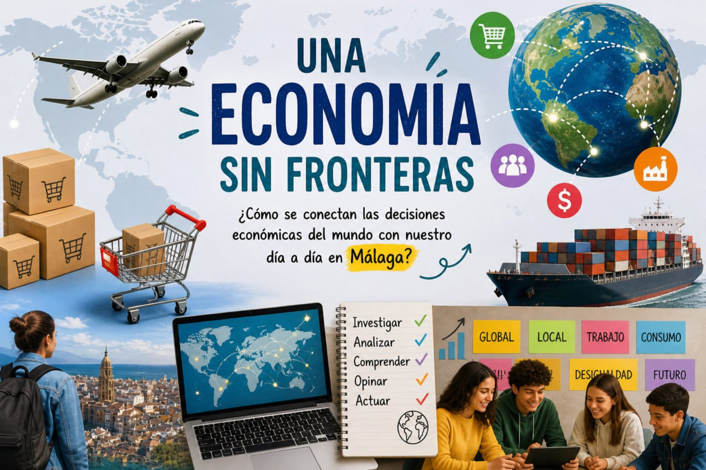

Texto

Imagen creada por Google Gemini IA para Regina Molina Arrebola
Hace no tanto tiempo, mucho antes de que existieran las grandes marcas o las tiendas online, las personas producían y consumían casi todo en su propio entorno. Lo que se cultivaba en un pueblo se comía en ese mismo lugar, y los productos apenas viajaban más allá de unos pocos kilómetros.
Sin embargo, poco a poco, el mundo empezó a cambiar.
Gracias a los avances en el transporte y la tecnología, los productos comenzaron a viajar cada vez más lejos. Un objeto podía fabricarse en un país, venderse en otro y consumirse en un lugar completamente distinto. Así nació lo que hoy conocemos como globalización: un sistema en el que las economías de todos los países están conectadas entre sí.
Pero la globalización no es solo una idea lejana. Está mucho más cerca de lo que parece.
Por ejemplo, la ropa que llevas puede haberse diseñado en Europa, fabricado en Asia y vendido en una tienda de tu ciudad. O el móvil que utilizas cada día puede haber recorrido miles de kilómetros antes de llegar a tus manos. Incluso muchas de las empresas que ves en tu barrio forman parte de grandes redes internacionales.
Con el tiempo, los economistas y geógrafos comenzaron a hacerse preguntas importantes:
¿Cómo funciona realmente esta economía global?
¿Quién toma las decisiones?
¿Y cómo afecta todo esto a nuestro trabajo, a nuestro barrio o a nuestras oportunidades de futuro?
Hoy sabemos que la economía no tiene fronteras claras. Las decisiones que se toman en otros países pueden influir directamente en lo que ocurre en lugares como Málaga: en los precios, en el empleo o en las oportunidades laborales.
Y lo más interesante es que esta economía global no solo se estudia en los libros.
Podemos verla en muchos aspectos de nuestra vida cotidiana:
En las tiendas de ropa de nuestro barrio.
En los productos del supermercado.
En las empresas multinacionales que generan empleo.
En las noticias sobre crisis económicas o crecimiento de países.
Incluso en las oportunidades de trabajo que existen a nuestro alrededor.
La economía global está presente en nuestro día a día, aunque a veces no seamos conscientes de ello.
Por eso, en esta Situación de Aprendizaje titulada “Una Economía Sin Fronteras”, vamos a investigar cómo funciona este mundo conectado, cómo influyen las grandes empresas y, sobre todo, cómo todo esto afecta a nuestra realidad más cercana.
La próxima vez que compres algo, veas una tienda o escuches una noticia económica, piensa:
¿De dónde viene esto?
¿Quién lo ha producido?
¿Y cómo llega hasta mí?
Probablemente descubrirás que el mundo está mucho más conectado de lo que imaginabas.